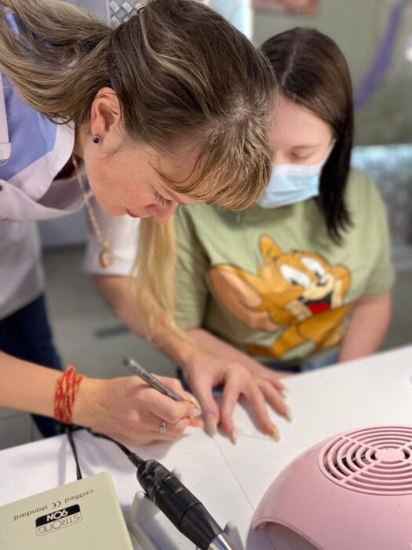

МАНИКЮР + ГЕЛЬ-ЛАК С НУЛЯ
Маникюр с нуля.
Практика с первого дня.
Вся теория — онлайн. В школе вы работаете руками: отрабатываете маникюр и покрытие на моделях под руководством преподавателя.

ПРАКТИКА С ПРЕПОДАВАТЕЛЕМ
Онлайн — теория.
В школе — модели.
С первого дня очных занятий переходим к практике. Учитесь держать инструмент, выполнять маникюр и наносить покрытие — с обратной связью преподавателя.
От 1 до 5 моделей за курс, в зависимости от пакета. Каждая отработка — возможность заметить ошибки, исправить их и повторить технику.
ВАШ ФОРМАТ ОБУЧЕНИЯ
52 видеоурока
Вся теория в онлайн-формате. Срок доступа зависит от пакета.
1 / 3 / 5 моделей
Очная отработка маникюра и покрытия в школе.
2–3 человека
В мини-группе — с вниманием преподавателя к вашей работе.
НАЧНИТЕ С ОСНОВ
Можно без опыта.
01
Начинаете с нуля
02
Хотите освоить новую профессию
03
Пробовали самостоятельно — нужна система
04
Хотите понимать каждый этап работы
ПРОГРАММА
Понимаете онлайн. Отрабатываете в школе.
Теоретическую базу изучаете в видеоуроках. На очных занятиях применяете знания в работе руками и на моделях.
Гигиена, обработка инструментов и безопасность
Строение ногтя и ограничения к проведению процедуры
Форма ногтей и подготовка к покрытию
Техника маникюра
База, цветное покрытие и топ
Снятие покрытия
Ошибки начинающего мастера
КАК ПРОХОДИТ ОБУЧЕНИЕ
От видеоуроков — к работе руками.
- 01Выбираете пакет и объём практики
- 02Изучаете теорию онлайн
- 03Практикуетесь с первого дня в школе
- 04Отрабатываете на моделях
- 05Разбираете и исправляете ошибки
Очная практика + онлайн-теория. Мини-группы по 2–3 человека; материалы для занятий предоставляет школа.
ПАКЕТЫ И СТОИМОСТЬ
Сколько моделей отработаете вы?
Главное различие пакетов — количество моделей и время на отработку. Практика с первого дня — в каждом.
Базовый
1 модель
16 500 ₽
Первое знакомство с профессией.
- Очная отработка
- 1 модель
- Онлайн-теория
- 52 видеоурока · 1 месяц
- Документ
- Сертификат
Профи
3 модели
25 000 ₽
Больше практики с преподавателем.
- Очная отработка
- 3 модели
- Онлайн-теория
- 52 видеоурока · 6 месяцев
- Документ
- Сертификат; свидетельство — дополнительно 5 000 ₽
Премиум
5 моделей
35 000 ₽
Самый большой объём практики.
- Очная отработка
- 5 моделей
- Онлайн-теория
- 52 видеоурока · бессрочно
- Документ
- Сертификат и свидетельство
Стажировка возможна дополнительно. В «Профи» и «Премиум» — готовый бизнес-план для соцзащиты.
ОПЫТ УЧЕНИЦ
Отзывы об обучении.
Анна Воронова
Выпускница базового курса маникюра. Её впечатления об обучении опубликованы на основном сайте школы.

ОЛЬГА И ШКОЛА
Olion Art
Professional
Ольга Богданова — мастер, преподаватель и основатель бренда.
В обучении важны понятные объяснения, последовательность работы и разбор ошибок. Чтобы вы понимали, что делаете на каждом этапе.
Задать вопросПОСЛЕ КУРСА
Понятная последовательность
работы мастера.
Маникюр и покрытие
Практика под руководством преподавателя.
Первые работы
Основа вашего портфолио.
Разбор ошибок
Обратная связь по выполненной работе.
Поддержка
Можно обращаться с вопросами после курса.
ПЕРЕД ЗАПИСЬЮ
Частые вопросы.
Когда начинается практика и где проходит теория?
Практика начинается с первого дня очных занятий в школе. Вся теория проходит онлайн — в 52 видеоуроках. В школе отрабатываем технику, работаем на моделях и разбираем ошибки с преподавателем.
Можно совсем без опыта?
Да. Курс предназначен для начинающих: знакомство с основами, демонстрация и практика под руководством преподавателя.
Нужно ли покупать инструменты и материалы?
Материалы для занятий предоставляет школа. Покупку собственного набора для дальнейшей работы можно обсудить отдельно.
Кто предоставляет моделей?
Практика: 1 модель в «Базовом», 3 — в «Профи», 5 — в «Премиум». Кто приглашает моделей, согласуем перед занятием.
Какой пакет выбрать?
Выбирайте по объёму практики: «Базовый» — 1 модель за 2 дня, «Профи» — 3 модели за 4 дня, «Премиум» — 5 моделей за 6 дней. Поможем выбрать формат под вашу задачу.
Какой документ выдаётся?
Сертификат предусмотрен во всех пакетах. В «Профи» свидетельство оформляется дополнительно за 5 000 ₽, в «Премиум» включено. Условия оформления уточните перед записью.
Какая поддержка после курса?
Информационная поддержка специалистов школы — в течение полугода после окончания обучения.
Как записаться и оплатить?
Выберите пакет и отправьте сообщение Ольге в Telegram. Она подтвердит программу, даты и условия оплаты.
ВАШ ПЕРВЫЙ ШАГ
Начните с практики. Выберите свой пакет.
1, 3 или 5 моделей — подберём объём отработки, расскажем о ближайших датах и подготовке к занятиям.
Написать и узнать даты